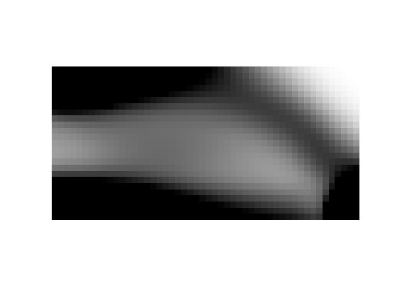
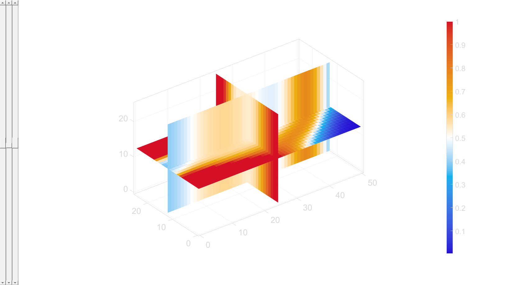

DEMO_0013_Mapping_Density_Distribution
This is a demo for:
- Building a non-uniform infill lattice structure, to map a specific structural properties, e.g. in this demo, it is mapping a density distribution field within the domain.
Contents
- Name
- creating density field
- grid for Phi-field
- creating hex mesh
- Access model element and patch data
- Mesh output
- Use barycentric mapping to figure out the elements voxel centres are found in
- Interpolation of rho onto grid
- Evaluate triply periodic function
- create a shell boundary
- Construct iso-surface
- Visualize surface
Name
License: to license
Author: Mahtab Vafaee, mahtab.vafaee@gmail.com
Change log: 2023/11/15 MV Created 2024/02/06 MV Edited ----------------------------------------------------------------------
clc; clear all; close all;
Plot settings
cMap=jet(250); faceAlpha1=0.5; faceAlpha2=0.65; edgeColor1='none'; edgeColor2='none'; fontSize=25; pColors=gjet(6);
creating density field
define input variables
nelx = 50; nely = 25; nelz = 25; volfrac = 0.7; penal = 2; rmin = 6; % calculating the density distribution map [rho0] = top(nelx,nely,volfrac,penal,rmin); % extending through the z-direction n = [1, 1, nelz]; rho = repmat(rho0, n); sv3(rho); colormap warmcold
It.: 1 Obj.: 98.6867 Vol.: 0.700 ch.: 0.200 It.: 2 Obj.: 73.4967 Vol.: 0.700 ch.: 0.200 It.: 3 Obj.: 65.6763 Vol.: 0.700 ch.: 0.200 It.: 4 Obj.: 64.5356 Vol.: 0.700 ch.: 0.068 It.: 5 Obj.: 64.0940 Vol.: 0.700 ch.: 0.040 It.: 6 Obj.: 63.8484 Vol.: 0.700 ch.: 0.029 It.: 7 Obj.: 63.6814 Vol.: 0.700 ch.: 0.022 It.: 8 Obj.: 63.5642 Vol.: 0.700 ch.: 0.017 It.: 9 Obj.: 63.5002 Vol.: 0.700 ch.: 0.013 It.: 10 Obj.: 63.4375 Vol.: 0.700 ch.: 0.010 
grid for Phi-field
n = 5; % resolution scale factor
x = linspace (0,nelx,nelx*n);
y = linspace (0,nely,nely*n);
z = linspace (0,nelz,nelz*n);
[XG, YG, ZG] = meshgrid(x, y, z);
VG= [XG(:), YG(:), ZG(:)];
creating hex mesh
boxDim=[nelx nely nelz]; boxEl=[nelx nely nelz]; [meshStruct]=hexMeshBox(boxDim,boxEl); E=meshStruct.E; V=meshStruct.V; F=meshStruct.F; Fb=meshStruct.Fb; faceBoundaryMarker=meshStruct.faceBoundaryMarker; V=V-min(V,[],1); % transforming on to grids % V=reshape (V, size(boxDim));
cFigure; title('Box boundaries faces','FontSize',fontSize); hold on; gpatch(Fb,V,'kw','k',faceAlpha1, 0.5); scatter3(V(:,1),V(:,2),V(:,3),20,'red'); % scatter3(VG(:,1),VG(:,2),VG(:,3),3,'y'); axisGeom(gca,fontSize); colormap(gjet(6)); icolorbar; drawnow; fjoifj
Unrecognized function or variable 'fjoifj'. Error in DEMO_0013_Mapping_Density_Distribution (line 89) fjoifj
Access model element and patch data
% Fb=boundary(Vd(:,1), Vd(:,2), Vd(:,3),1); % boundary with shrink-factor 1 (not the same as faceBoundary) indBoundary=tesBoundary(Fb); Fb=Fb(indBoundary,:); Cb=-1*ones(size(Fb,1),1); CE=-2*ones(size(E,1),1); meshStructure.elementData=rho; % To visualize % Access model element and patch data meshStructure.facesBoundary=Fb; meshStructure.boundaryMarker=Cb; meshStructure.nodes=V; meshStructure.elementMaterialID=CE; meshStructure.elements=E;
Mesh output
meshView(meshStructure);
Use barycentric mapping to figure out the elements voxel centres are found in
% TR = triangulation(E,V); %Conver to "triangulation" type % [elementIndexFound,baryCentricCoordinate]=pointLocationTR(TR,VG,1,1,1); % Compute % logicInside=~isnan(elementIndexFound); %if nan then the voxels are outside shape
Interpolation of rho onto grid
interpolationMethod = 2; switch interpolationMethod case 1 % Neirest rho_VG=nan(size(VG,1),1); rho_VG(logicInside)=rho(elementIndexFound(logicInside)); rho_VG=reshape(rho_VG, size(XG)); case 2 % Linear Vm=patchCentre(E,V); % center of the elements rho_VG=griddata(Vm(:,1),Vm(:,2),Vm(:,3),rho,XG(:),YG(:),ZG(:),'linear'); %Interpolate on grid case 3 % Element nodal average tri-linear rho_V = faceToVertexMeasure(E,V,rho); % Average from elements to nodes % Shape function (=barycentric coordinate) based within element % tri-linear interpolation rho_VG=nan(size(VG,1),1); for indPoint = find(logicInside)' indElement = elementIndexFound(indPoint); indNodes = E(indElement,:); rho_VG(indPoint) = sum(baryCentricCoordinate(indPoint,:) .* rho_V(indNodes)'); end case 4 % Natural Vm=patchCentre(E,Vi); % center of the elements interpFunc_rho = scatteredInterpolant(Vm,rho,'natural','none'); %Create interpolator rho_VG=nan(size(VG,1),1); rho_VG(logicInside) = interpFunc_rho(VG(logicInside,:)); end rho_VG=reshape(rho_VG, size(XG)); sv3(rho_VG); colormap gjet;
l=(rho_VG-0.5)/-(1/3); % [-1.5, 0.75] levelset range freq=0.05; k = freq*boxDim; % number of periods cFigure; scatter3(VG(:,1),VG(:,2),VG(:,3),25,l(:),'filled'); axis tight; axis equal; colorbar;
Evaluate triply periodic function
S=(sin(k(1,1).*XG).*cos(k(1,2).*YG))+(sin(k(1,2).*YG).*cos(k(1,3).*ZG))+(cos(k(1,1).*XG).*sin(k(1,3).*ZG)); i=2.5; % Leads to a minimu of 1 later S=S+i; % S=-S-i; l=l+i; % l=-l-i; % i - i+s S=S./l; % S=-S; sv3(S); colormap warmcold; %Construct iso-surface [Fg,Vg] = isosurface(XG,YG,ZG,S,1); % [Fc,Vc] = isocaps(XG,YG,ZG,S,0); % [Fg,Vg]=joinElementSets({Fg,Fc},{Vg,Vc}); % [Fg,Vg]=mergeVertices(Fg,Vg);
Visualize surface
cFigure; gpatch(Fg,Vg,'kw','k',1); hold on; gpatch(Fb,V,'rw','none',0.3); axisGeom; camlight headlight; drawnow;
create a shell boundary
t=0.02; % shell thickness
R=DG_im; R(R<(-t/2))=-R(R<(-t/2))-t; sv3®; colormap warmcold caxis([-t t])
Ls=(DG_im)<=-t;
Sn=R; Sn(Ls)=S(Ls);
sv3(Sn); colormap warmcold m=max(abs(Sn(:)));
[Ft,Vt]=quad2tri(Fb,V,'f');
Construct iso-surface
% [Fsn,Vsn] = isosurface(X,Y,Z,Sn,0); % create a gyroid isosurface [Fsn,Vsn,Csn]=joinElementSets({Ft,Fg},{Vt,Vg}); [Fsn,Vsn]=patchCleanUnused(Fsn,Vsn); %Remove unused nodes [Fsn,Vsn]=mergeVertices(Fsn,Vsn); %Merge nodes
Visualize surface
cFigure; hold on; gpatch(Fsn,Vsn,'kw','none',0.3); % gpatch(Fb,V,'rw','none',0.3); axisGeom; colormap spectral; icolorbar; camlight headlight; axis off; drawnow;
cutViewAnim8(Fsn,Vsn);
function cutViewAnim8(F,V) FV=patchCentre(F,V)/5; C=sin(FV(:,1))+sin(FV(:,2))+sin(FV(:,3)); snapTolerance=mean(patchEdgeLengths(F,V))/50; %Snapping tolerance n=vecnormalize([0 0 1]); %Plane normal vector P=mean(V,1); %Point on plane [Fc,Vc,Cc,logicSide]=triSurfSlice(F,V,C,P,n,snapTolerance); Eb=patchBoundary(Fc(logicSide,:)); hf=cFigure; hold on; hp1=gpatch(Fc(logicSide,:),Vc,'w','none',1,3); hp2=gpatch(Fc(~logicSide,:),Vc,'w','none',0.25); hp3=gpatch(Eb,Vc,'none','b',1,4); axisGeom; axis manual; camlight headligth; view(-90,0); zoom(1.25);axis off; gdrawnow; nSteps=75; %Number of animation steps animStruct.Time=linspace(0,1,nSteps); %Create the time vector z=linspace(min(V(:,3)),max(V(:,3)),nSteps); for q=1:1:nSteps P=[0 0 z(q)]; [Fc,Vc,~,logicSide,Eb]=triSurfSlice(F,V,C,P,n,snapTolerance); %Set entries in animation structure animStruct.Handles{q}=[hp1 hp1 hp2 hp2 hp3 hp3]; %Handles of objects to animate animStruct.Props{q}={'Vertices','Faces',... 'Vertices','Faces',... 'Vertices','Faces',... 'Vertices','Faces','CData'... }; %Properties of objects to animate animStruct.Set{q}={Vc,Fc(logicSide,:),Vc,Fc(~logicSide,:),Vc,Eb,Vc,Fc,double(logicSide)}; %Property values for to set in order to animate end anim8(hf,animStruct); end